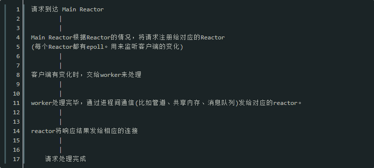

有需要学习交流的友人请加入swoole交流群的咱们一起，有问题一起交流，一起进步！前提是你是学技术的。感谢阅读！
swoole如何处理高并发
①Reactor模型介绍
IO复用异步非阻塞程序使用经典的Reactor模型，Reactor顾名思义就是反应堆的意思，它本身不处理任何数据收发。只是可以监视一个socket(也可以是管道、eventfd、信号)句柄的事件变化。
Reactor只是一个事件发生器，实际对socket句柄的操作，如connect/accept、send/recv、close是在callback中完成的。
②swoole的架构
swoole采用多线程Reactor+多进程Worker。
当请求到达时,swoole是这样处理的：

因为reactor基于epoll，所以每个reactor可以处理无数个连接请求。 如此，swoole就轻松的处理了高并发。